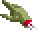

Questa pagina è ispirato dal mio amore per il videogioco classico di Sierra Quest for Glory: Shadows of Darkness, noto comunemente come Quest for Glory IV e lanciato per la prima volta nel anno 1993. La storia avviene in e circa una cittadina col nome di Mordavia in un paese medioevole immaginario dallo stesso nome, basato sull’Europa dell’Est slava e incorporando componenti del folclore locale come il domovoi e la rusalka. L’eroe deve impedire le prove di una setta oscura a rianimare la sua divinità, che distruggerebbe il mondo.
Il gioco è notevole non solamente per la sua giocabilità ibrida di un gioco di ruolo e un gioco d'avventura, la quale è a maggior parte simile a tutti i giochi precedenti nella serie, ma per la sua musica, doppiaggio, e estetica visiva eccellente. Alcuni considerano il titolo come il migliore dei cinque contributi nella serie, e mentre articoli contemporeani non erano eccezionali, alcuni lo descrivano allora come uno dei giochi d'avventura migliori di tutti i tempi.
L’uomo che potreste vedere alla sinistra, a seconda della larghezza dello schiermo, è Dr. Cranium, un scienziato personaggio bizarro ma utile dal gioco, mentre lo sfondo è l’interno del suo laboratorio. Questo riferisce alla Dr. Brain serie di giochi di puzzle, lanciata dalla stessa azienda.
Il mio scopo principale qui è proseguire con un’idea che mi è venuto in mente nel anno 2015 nel contesto di un corso sulle interfaccia utente nella scuola di specializzazione. Cioè questa è una prova a imitare molto dell’interfaccia del gioco, compresa la grafica per le caselle di testo ed i menù del gioco, ma applicarlo a una website invece di un gioco.
Scaricamenti
Tutti i cinque giochi originali nella serie si può avere a buon mercato a GOG.com. Questa collezione dei giochi comprende un remake del primo titolo con grafica molto meglio, ma sfortunatamente quella del secondo gioco è ancora piuttosto primitiva. Si può tuttavia scaricare un 2008 remake molto migliorato di Quest for Glory II: Trial by Fire.
Un nuovo "gioco di ruolo-avventura" intitolato Hero-U: Rogue to Redemption è stato sviluppato dai progettisti di Sierra Corey e Lori Cole, che erano responsibili per la Quest for Glory serie. Il titolo ha ricevuto a gran maggioranza articoli favorevole da sia giocatori che critici. Il gioco è destinato ad essere il primo di cinque titoli simili, e un gioco più informale intitolo Summer Daze at Hero-U è programmato a lanciare in ottobre di quest’anno.
Un gioco ben accetto di 2013 basato sulla serie, intitolo Heroine's Quest, è gratuito a scaricare. La storia, basato sulla mitologia nordica, avviene in una regione dannato da un gigante di gelo a rimanere in inverno senza fine. L’eroina deve impedire le prove del gigante ad apportare la fine del mondo e ristabilire il cambio normale degli stagioni.
Molti scaricamenti di più, comprese schermate, si può trovare su una fan page chiamata Quest for More Glory, mentre aiuta per diversi problemi, compresi i manuali piuttosto creativi del gioco, è disponibile a Sierrahelp.com. Sierragamers.com fornisce il libro d’indizi.
Un appassionato ha creato una modificazione al sparatutto classico in prima persona Hexen, nel quale il giocatore può muoversi per molto del mondo di Quest for Glory IV. Video dimostrativi di questo mod, conosciuto come Quest for Glory IV 3D, si può trovare su YouTube. La sua website, Blake's Sanctum, contiene risorse estese collegate a QfG.
Immagini del Gioco
Ecco alcune schermate prese dal gioco, per dare un’idea di quello che questa pagina prova ad imitare. Molti altri esempi dell’arte del gioco sono anche disponibili.


Icons
Ecco alcune icone dal gioco. Le icone si usano per interagire con l’ambiente in modi diversi; per esempio, l’icona della boca si usa per parlare con qualcuno, mentre l’icona dei piedi che si può vedere quando muove il cursore su un link si usa per andare da qualche parte. Il segno con sei gambi che apparisce quando muove il cursore sull’intestazione è un oggetto dal gioco che rappresenta la divinità venerata dai loro antagonisti.
Altri hanno già fatto una prova ad applicare alcuni di questi come estensioni per un sistema operativo.
Musica
La musica di questo gioco è stato descritto come "gotico, folk e rock" e comprende una versione di Anitra's Dance, una parte di Peer Gynt Suite No. 1, Op. 46 di Edvard Grieg. Grieg era un compositore nationalista norvegese dell’era romantica, e appropriatamente per l’ambientazione rurale e personaggi contadini del gioco, è stato influenzato dalla musica folk del suo paese.
Secondo il compositore della colonna sonora, Aubrey Hodges, niente di questo è ancora disponibile nella forma di spartito. La colonna sonora originale è tuttavia disponibile gratuitamente per YouTube, o per Sierra Music Central, mentre una versione aggiornata, compresi strumenti dal vivo e 42 arrangiamenti nuovi si può comprare dalla pagina su Bandcamp del compositore.